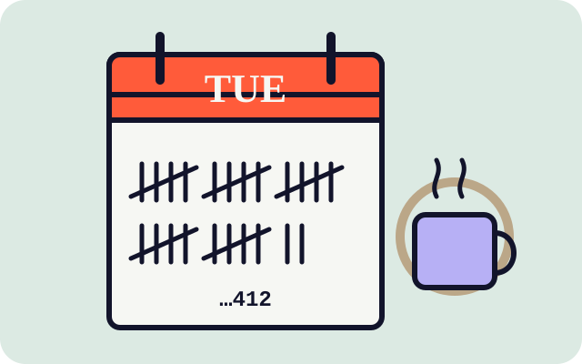

CASE FILE #0412 · TEMPORAL
The man who lived Tuesday 412 times (and what finally changed)
He knew the barista's line before she said it. He knew the bus would be four minutes late. What he didn't know was why session nine felt different — and neither did I, until I read my own notes back. On loops, novelty, and the surprising power of being the only one who remembers.
6 min read · or one Tuesdayread it now